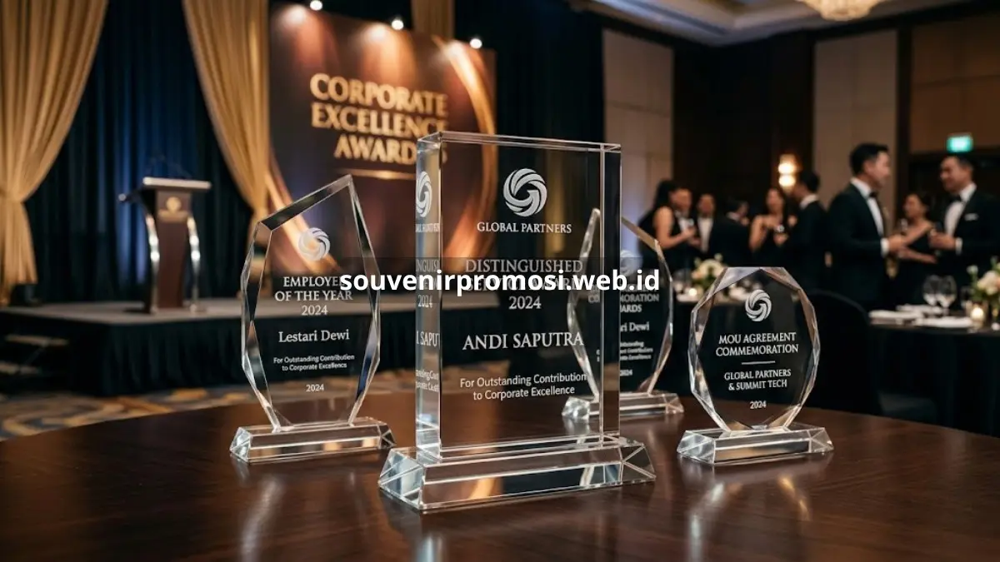
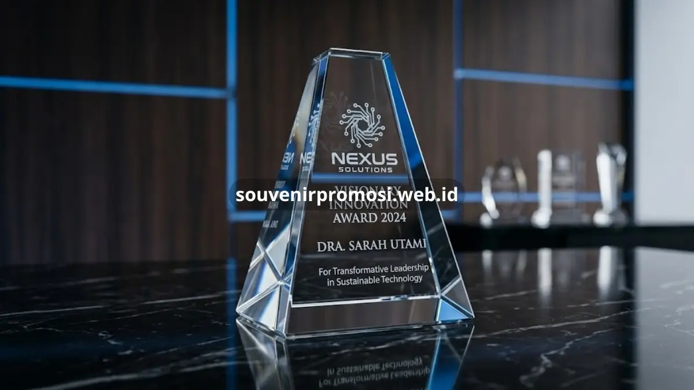

Poin Penting
- Plakat kristal eksklusif tampil premium karena material kristal optik yang jernih dan tahan lama.
- Cocok untuk penghargaan karyawan, MOU, ulang tahun perusahaan, hingga hadiah untuk mitra bisnis.
- Bisa dipersonalisasi lewat gravir laser nama, logo, dan pesan khusus.
- Investasi jangka panjang karena tidak mudah pudar atau rusak dibanding souvenir berbahan lain.
- SouvenirPromosi menyediakan layanan pembuatan plakat kristal eksklusif dengan desain custom sesuai kebutuhan perusahaan.
Daftar Isi
- Pendahuluan
- Apa Itu Plakat Kristal Eksklusif?
- Mengapa Kristal Berbeda dari Bahan Souvenir Lain?
- Untuk Momen Apa Saja Plakat Kristal Eksklusif Cocok Digunakan?
- Apakah Plakat Kristal Cocok untuk Acara Non-Formal Perusahaan?
- Apa Saja Kelebihan Memilih Plakat Kristal Eksklusif?
- Bagaimana Plakat Kristal Mendukung Citra Profesional Perusahaan?
- Apa Saja Faktor yang Memengaruhi Kualitas Plakat Kristal Eksklusif?
- Apa Kesalahan Umum yang Perlu Dihindari Saat Memesan Plakat Kristal?
- Bagaimana Cara Menentukan Desain Plakat Kristal yang Tepat untuk Perusahaan?
- Kesimpulan
- FAQ
Pendahuluan
Plakat kristal eksklusif adalah penghargaan berbahan kristal berkualitas tinggi yang dirancang khusus untuk momen formal perusahaan seperti apresiasi karyawan, serah terima jabatan, dan kerja sama bisnis. Bentuknya yang bening, presisi, dan mengilap menghadirkan kesan mewah yang sulit ditandingi bahan lain. Bagi perusahaan yang ingin memberi kesan mendalam kepada penerima, plakat kristal eksklusif menjadi pilihan yang konsisten diandalkan.
Apa Itu Plakat Kristal Eksklusif?
Plakat kristal eksklusif adalah objek penghargaan yang dibuat dari kristal optik berkualitas tinggi, dibentuk dan dipoles secara presisi agar menghasilkan efek kilau dan kejernihan maksimal. Berbeda dari kaca biasa, kristal memiliki kandungan oksida timbal atau bahan optik khusus yang membuat pantulan cahayanya lebih tajam dan elegan. Karena karakteristik inilah, plakat kristal banyak dipilih untuk acara-acara resmi yang membutuhkan kesan berkelas.
Dalam konteks korporat, plakat kristal eksklusif umumnya digunakan sebagai simbol pencapaian, penghargaan, atau tanda kerja sama. Bentuknya bervariasi, mulai dari balok persegi, trofi minimalis, hingga desain custom yang menyesuaikan identitas perusahaan. Permukaannya dapat digravir menggunakan teknologi laser 3D untuk menghasilkan detail nama, logo, atau bahkan foto tiga dimensi di dalam kristal.
Mengapa Kristal Berbeda dari Bahan Souvenir Lain?
Kristal menawarkan tingkat kejernihan optik dan bobot yang memberi kesan "berharga" secara instan, sesuatu yang sulit dicapai bahan akrilik atau resin. Kepadatan kristal membuat gravir di dalamnya terlihat tiga dimensi dan tahan lama tanpa memudar. Faktor inilah yang membuat plakat kristal eksklusif sering ditempatkan sebagai penghargaan tertinggi dalam suatu acara, dibandingkan souvenir berbahan lain yang lebih sering digunakan untuk merchandise massal.
Untuk Momen Apa Saja Plakat Kristal Eksklusif Cocok Digunakan?
Plakat kristal eksklusif paling sering digunakan untuk penghargaan karyawan berprestasi, penandatanganan MOU, peringatan ulang tahun perusahaan, dan hadiah perpisahan bagi eksekutif. Setiap momen memiliki desain dan pesan gravir yang berbeda agar makna penghargaan tersampaikan dengan tepat.
Pada acara penghargaan tahunan, plakat kristal biasanya digravir dengan nama penerima, jabatan, dan pencapaian spesifik seperti "Karyawan Terbaik Divisi Penjualan". Untuk momen kerja sama bisnis, plakat kristal sering dibuat berpasangan dengan logo dua perusahaan yang saling bermitra, melambangkan komitmen jangka panjang. Sementara itu, untuk hadiah purna tugas, desain plakat cenderung lebih personal dengan kutipan apresiasi atau ringkasan kontribusi selama masa kerja.

Apakah Plakat Kristal Cocok untuk Acara Non-Formal Perusahaan?
Plakat kristal tetap relevan meski desainnya disederhanakan untuk acara yang lebih santai, seperti gathering tahunan atau perayaan pencapaian target. Meski nuansa acara lebih ringan, bentuk kristal tetap memberi kesan penghargaan yang serius dan bermakna, sehingga tidak terkesan seperti souvenir biasa.
Apa Saja Kelebihan Memilih Plakat Kristal Eksklusif?
Kelebihan utama plakat kristal eksklusif terletak pada daya tahan, kesan mewah, dan fleksibilitas personalisasinya. Ketiga faktor ini menjadikannya pilihan yang lebih unggul dibanding souvenir korporat konvensional untuk kebutuhan penghargaan formal.
Dari sisi daya tahan, kristal tidak mudah tergores maupun berubah warna meski disimpan bertahun-tahun, berbeda dengan plakat kayu yang berisiko lapuk atau plakat logam yang bisa mengalami oksidasi. Dari sisi personalisasi, teknologi gravir laser memungkinkan detail nama, logo, hingga foto tiga dimensi ditanamkan langsung ke dalam kristal tanpa mengurangi kejernihannya. Sementara dari sisi kesan visual, pantulan cahaya pada kristal menciptakan efek premium yang langsung terlihat berbeda saat diletakkan di meja kerja maupun etalase penghargaan.
Berdasarkan pengamatan umum di industri kerajinan kristal, permintaan penghargaan berbahan kristal cenderung meningkat setiap kuartal keempat, seiring banyaknya perusahaan yang menggelar acara penghargaan akhir tahun. Tren ini menunjukkan bahwa plakat kristal eksklusif semakin dianggap sebagai standar penghargaan korporat, bukan lagi sekadar pelengkap acara.
Bagaimana Plakat Kristal Mendukung Citra Profesional Perusahaan?
Plakat kristal yang diberikan kepada karyawan atau mitra bisnis secara tidak langsung mencerminkan standar kualitas perusahaan pemberi. Ketika sebuah perusahaan memilih penghargaan berbahan premium, penerima cenderung menilai perusahaan tersebut memperhatikan detail dan menghargai pencapaian secara serius. Kesan ini penting terutama dalam hubungan bisnis jangka panjang dengan klien maupun mitra strategis.
Apa Saja Faktor yang Memengaruhi Kualitas Plakat Kristal Eksklusif?
Kualitas plakat kristal eksklusif dipengaruhi oleh jenis kristal yang digunakan, presisi proses gravir, serta desain akhir yang disesuaikan dengan tujuan penghargaan. Tiga faktor ini menentukan apakah plakat terlihat premium atau justru terkesan biasa.
Jenis kristal optik dengan tingkat kejernihan tinggi akan menghasilkan pantulan cahaya yang lebih tajam dibanding kristal kualitas standar. Proses gravir laser 3D yang presisi memastikan detail nama, logo, atau foto tampak tajam dari berbagai sudut pandang, tanpa retakan halus di permukaan. Sementara itu, desain akhir yang mempertimbangkan proporsi, tipografi, dan tata letak logo turut menentukan kesan profesional pada plakat tersebut.
Apa Kesalahan Umum yang Perlu Dihindari Saat Memesan Plakat Kristal?
Kesalahan yang sering terjadi adalah memilih ukuran plakat yang tidak sesuai konteks acara, teks gravir yang terlalu panjang sehingga sulit dibaca, serta melewatkan proses proofing desain sebelum produksi massal. Menghindari kesalahan-kesalahan ini membantu memastikan hasil akhir plakat kristal benar-benar merepresentasikan nilai penghargaan yang ingin disampaikan perusahaan.
Bagaimana Cara Menentukan Desain Plakat Kristal yang Tepat untuk Perusahaan?
Menentukan desain plakat kristal yang tepat dimulai dari memahami tujuan penghargaan, target penerima, dan identitas visual perusahaan. Desain yang selaras dengan ketiga aspek ini akan menghasilkan plakat yang terasa personal sekaligus tetap merepresentasikan citra korporat.
Untuk penghargaan internal seperti karyawan berprestasi, desain biasanya menonjolkan nama dan pencapaian spesifik dengan tipografi yang formal. Untuk plakat kerja sama bisnis, desain lebih menekankan keseimbangan visual antara logo dua perusahaan agar terlihat setara dan profesional. Warna dasar kristal, bentuk dudukan, hingga jenis pencahayaan tambahan seperti lampu LED juga dapat disesuaikan untuk memperkuat kesan eksklusif pada plakat tersebut.
Kesimpulan
Plakat kristal eksklusif adalah investasi penghargaan yang memperkuat citra profesional perusahaan sekaligus memberi kesan mendalam bagi penerimanya, baik karyawan, mitra bisnis, maupun klien. Ketahanan material, fleksibilitas personalisasi, dan kesan visual premium menjadikannya pilihan yang lebih unggul dibanding souvenir korporat konvensional untuk berbagai momen formal perusahaan.
Jika perusahaan Anda sedang mempersiapkan acara penghargaan atau ingin memberi kesan berkelas kepada mitra bisnis, SouvenirPromosi siap membantu mewujudkan plakat kristal eksklusif dengan desain custom sesuai kebutuhan. Konsultasikan kebutuhan plakat kristal perusahaan Anda bersama tim SouvenirPromosi sekarang juga.